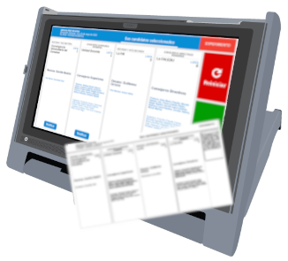
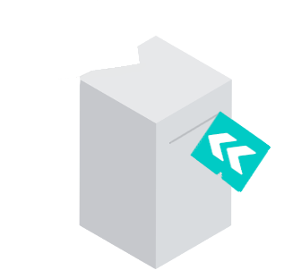

Simulador del Sistema de Voto Electrónico basado en sistema de Boleta Única Electrónica
La Autoridad de Mesa le entregará una boleta en blanco y retirará ante Usted el primer troquel.
La Autoridad de Mesa le entregará una boleta en blanco.
Luego coloque la boleta en la ranura en el sentido que indica la flecha y selecciones el Claustro al que pertenece


La máquina imprimirá su elección. Luego pliegue y coloque la boleta impresa en la urna.
Gracias por participar
Regrese a la mesa con la boleta plegada por la línea de puntos para preservar el secreto de su selección.
Frente a la Autoridad de Mesa corte el segundo troquel y entréguelo. Por último, introduzca la boleta en la urna para emitir su voto.
Gracias por utilizar el simulador del Sistema de Boleta Única Electrónica (BUE)
Para iniciar el simulador seleccione el departamento en la que vota: